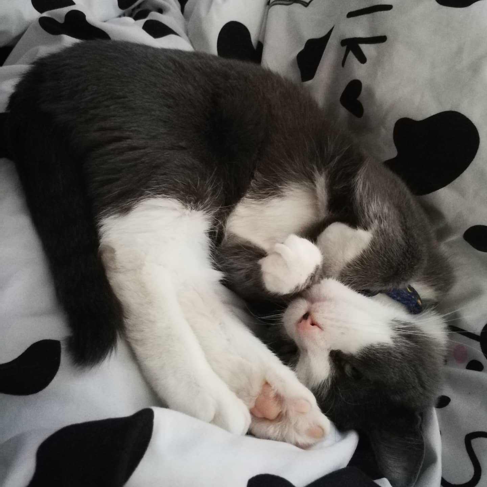

About Selena
I am 23 years old and this is my second time in college. Before Interactive media design, I graduated from Video Game Design adn Developement. It was a new 3 year advanced diploma program and I was the first year to graduate from it. I have lived in London my whole life fun fun.
My Interests
I have many different hobbies and pass times that I enjoy. I love getting together for board game nights with friends, as well as playing DND(nerd much). I also love craft beer, wine and delicious food! My favourite food is sushi but I enjoy pretty much all japanese food. I also loveeeeeee cats! I have a little ball of fur at home, her name is Georgie. I rescued her from outside my apparement this past summer. She was pregnant and starving. Now she is a energetic little demon that I love very much.
